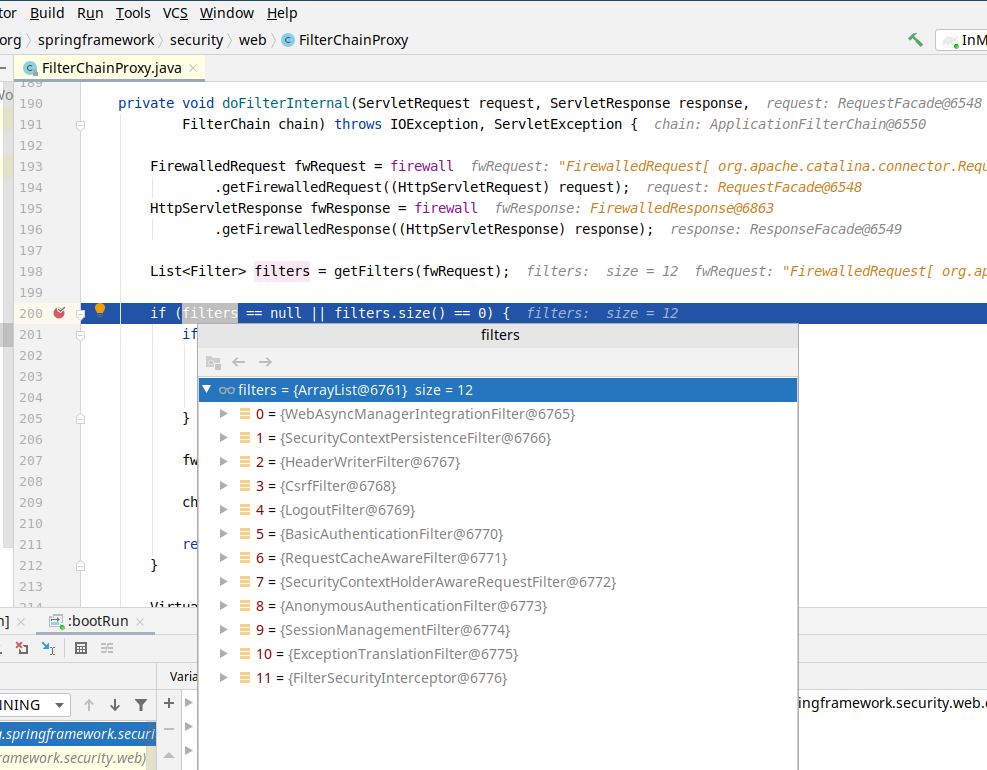

Spring Security - Filter Chain
Filter chain is one of the most important concept in Spring Security. Most of the features provided are accomplish or related to one or more filter.
Spring Security filter chain
Spring Security maintains a filter chain. All the requests has to gone through the filter chain in order to visite the resource. Each filter has a specific responsbility. You can add, remove and replace filters in the filter chain.
When you start a spring boot application with spring security, the filter list will be output to the console
1 | 2022-06-30 12:08:06.300 INFO 35936 --- [ restartedMain] o.s.s.web.DefaultSecurityFilterChain : Will secure any request with [org.springframework. |
To learn more on filter chain, see Spring Security filters documentation on Filters
Here are some of the IMPORTANT Filters you need to understand:
FilterChainProxy
Spring Security’s FilterChainProxy is the entry point for all web base security. You can put a breakpoint at FilterChainProxy’s doFilterInternal method to see all the Filters used.
SecurityContextPersistenceFilter
SecurityContextPersistenceFilter populates the SecurityContextHolder with information obtained from the configured SecurityContextRepository prior to the request and stores it back in the repository once the request has completed and clearing the context holder. By default it uses an HttpSessionSecurityContextRepository.
Deprecated. Use SecurityContextHolderFilter
Authentication processing filter
UsernamePasswordAuthenticationFilter, CasAuthenticationFilter, BasicAuthenticationFilter, OAuth2LoginAuthenticationFilter etc - Processes an authentication. Then putting the valid authentication token into the SecurityContextHolder.
ExceptionTranslationFilter
The ExceptionTranslationFilter allows translation of AccessDeniedException and AuthenticationException into HTTP responses.
FilterSecurityInterceptor
The FilterSecurityInterceptor provides authorization for HttpServletRequests. If access is denied, an AccessDeniedException is thrown. ExceptionTranslationFilter handles the AccessDeniedException.